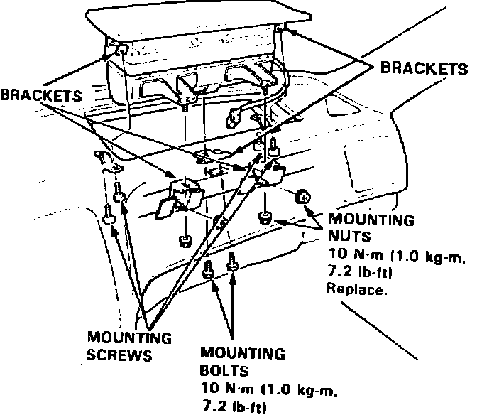
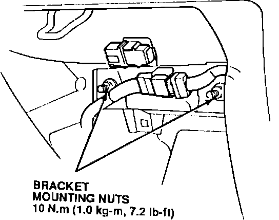

Passenger Side Air Bag Adjustment
BULLETIN NO.91-019
January 19, 1993
YEAR [NEW]
1991-93
1993
MODEL
LEGEND
VIGOR
VIN APPLICATION
ALL
Passenger's Airbag Adjustment (Supersedes 91-019, dated march 25, 1991)
PROBLEM
The passenger's airbag top cover does not sit flush with the surrounding dashboard.
CORRECTIVE ACTION
Adjust the airbag's mounting brackets to align the top cover.
NOTE:
Due to a limited adjustment range, it may not be possible to perfectly align the airbag.
Legend:
1. Check the alignment of the airbag top cover with the dashboard. Note where it sits higher or lower.

2. Remove the glove box as described in section 20 of the service manual.
3. Protect the dashboard around the airbag with duct tape.
4. Remove the passenger's airbag as described in section 23 of the service manual.
5. Move the mounting brackets to reposition the airbag as noted in step 1. The brackets are slotted to permit adjustment.
6. Reinstall the airbag and the glove box.
Vigor:
1. Check the alignment of the airbag top cover with the dashboard. Note where it sits higher or lower.
2. Remove the glove box as described in section 20 of the service manual.

3. Loosen the two airbag bracket mounting nuts. Press down on the portion of the airbag top cover that sits too high, and then relighten the airbag bracket mounting nuts.
4. Reinstall the glove box.
WARRANTY CLAIM INFORMATION
In warranty:
The normal warranty applies.
Out of warranty:
Any repair performed after warranty expiration may be eligible for goodwill consideration by the District Service Manager. You must request consideration, and get the DSM's decision, before starting work.
Operation number:
754310
Flat rate time:
Legend - 0.5 hour
Vigor - 0.4 hour
Failed P/N:
77869-SP0-A81
Defect code:
074
Contention code:
A01